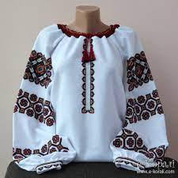
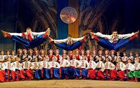

Ukraina er et land i Øst-Europa kjent for sin rike historie, kultur og pittoreske landskap.
| Navn | Beskrivelse | Bilde |
|---|---|---|
| Tomato supe | Tradisjonell ukrainsk suppe laget av rødbeter, kål og andre grønnsaker. |
|
| Vareniki | Paier med ulike fyll, som poteter, ost eller kirsebær. | |
| Vishivanka | Tradisjonell brodert skjorte med ornamenter. |  |
| Hopak | Nasjonaldansedrakt brukt under hopak-forestilling. |  |